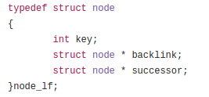

Introduction
Concurrent Data Structures:
A Concurrent data structure is way of storing and accessing data with multiple threads or processes. In a concurrent data structure, multiple readers and writers in different threads can read or write to the data structure. There are 2 ways to achieve concurrency in data structures: Blocking and Non-Blocking. In this blog we would be implementing a non-blocking (using lock-freedom) linked list in C using an algorithm suggested by this paper.
Blocking Concurrent data structures:
In a multithreaded application/program, there exists a critical section which 2 threads or processes cannot access or modify simultaneously for correct execution of the application/ program. In blocking concurrent data structures this is achieved by using techniques of mutual exclusion. The most commonly used technique of mutual exclusion is using a lock. A lock can protect other threads from executing the critical section. Only the thread which have successfully acquired the lock can execute the critical section. Let’s look at the following example of a lock
<code>
Acquire Lock
/*
Critical section
*/
Release Lock
</code>
In C, the pthread library implements a mutual exclusion lock. Let’s see an example of a lock with respect to operations in a linked list. A linked list usually has 3 major operations:
Consider a scenario where 2 threads are simultaneously trying to insert into a linked list. Let us assume that, the insertion always happens after the last element of the list. For the correct execution of insert operation, is it important for each thread to correctly identify the last element of the list. Hence the critical section, in this case, would be to identify the last element in the list and add the new element to be inserted after this last element. So, every thread needs to lock this critical section.
<code>
void thread1()
{
Acquire lock
Find the last element in the list
Add the link to new element after the last element in the list
Release the lock
}
</code>
Blocking concurrent data structures are easy to implement if the critical section is identified correctly. However, it has its set of disadvantages, the most important one’s are deadlock and livelock. In concurrent computing, a deadlock occurs when two competing actions wait for the other to finish, and thus neither ever does. A delay of one process can cause performance degradation and priority inversion. To counter this disadvantage, non-blocking concurrent data structure proposes 3 methods which are explained below.
Non-blocking concurrent data structure:-
Non-blocking concurrent data structure is different from its blocking counterpart in a way that, no thread can block the progress of a different thread. As explained above, if we are using locking in concurrent data structure, then once a thread is in critical section no other thread can make progress until the thread, which has the lock has, finished its critical section and released the lock. In non-blocking concurrency, we try to avoid the main disadvantages of blocking i.e deadlock and livelock.
There are three type of non-blocking algorithms:-
Obstruction-Freedom:-
Obstruction-freedom is the weakest natural non-blocking progress guarantee. It achieves obstruction freedom by executing a thread in isolation i.e. suspending any obstructing threads.All lock-free algorithms are obstruction free.
Lock-Freedom:-
In lock-free algorithms individual threads may starve but, system-wide throughput is guaranteed. In lock-free algorithms, there is a guarantee that at least one thread will make progress,hence avoiding the deadlock and livelock conditions. In these algorithms, some other thread may assist an obstructing thread to complete its operation to ensure its own progress. Hence, it guarantees finite step execution of some threads. Ensuring the finite step progress may affect the correctness of data structure. Hence, to ensure both finite step progress and correctness, these algorithms need support from hardware. In most of the cases, lock-freedom is achieved using atomic read-modify-write instruction supported by hardware . The most popular and the one which we have used in our implementation is Compare and Swap(CAS) instruction.Compare and Swap compares the content in memory location(old value) to a given value and, only if they are the same, modifies the content in memory location(old value) to a given new value. This whole process is atomic. The pseudocode below shows the basic operation of CAS.
C&S (Word* address, Word old val, Word new val ) : Word
{
value = *address
if (value == old val)
*address = new val
return value
}
We will talk more about implementation of lock-free algorithm and use of CAS in further part of this blog.
Wait-freedom:-
Wait-freedom is better than both non-blocking algorithms explained above. Wait-freedom guarantees both system-wide throughput and starvation freedom. It guarantees that each and every thread will make progress in a time bound; unlike lock-free which guarantees progress of some thread(while others may starve) in finite(not time bound) number of steps. In wait-free algorithms, a process that enters later must help the process/processes that entered before its entry to finish their operation/operations. Hence, no thread will starve. Use of CAS is popular in implementation of wait-free algorithms. Wait-free algorithms have applications in hard real-time systems.
Lock Free Linked List
Each node in a linked list has effectively two fields, data/key, and a right pointer. Data field consists of the data and a right pointer is used to point to the next node.While implementing lock-free linked list the most critical part is to make sure that the right pointer of the node being deleted is not changed by some other process/thread. Harris’s implementation of lock-free linked list is one of the most popular lock-free implementation of a data structure and takes care of this part.
In his implementation Harris, replaced the right pointer with a composite field consisting of a mark bit and a right pointer. Let’s use the term successor field for the composite field as used by Mikhail Fomitchev and Eric Ruppert in their paper (our implementation is based on this paper).
Now, while deleting a node Harris’s implementation follows a two step process. First, it sets (0 to 1) the mark bit of the node being deleted. To ensure correctness, this operation must be atomic. Hence, it uses a CAS to set the mark bit. Once the mark bit of a node is set, it is logically deleted and no thread can perform any operation on it. Second step is to physically delete the node. Another CAS is used to physically delete/remove the logically deleted node from the list. To physically delete a node, CAS first checks the content in the right pointer of the predecessor of logically deleted node, if it is still pointing to logically deleted node(old value), it swaps that content with address of the new node(new value).

But Harris’s algorithm has some disadvantages. The main disadvantage Harris’s algorithm has is in case of failed insertion. Suppose, thread T1 is trying insert after node X and thread T2 is trying to delete node X. If thread T2 manages to mark node X before threads T1 inserts after it,then insertion operation of thread T1 will fail. In this case, this algorithm requires the insert operation to start from the beginning of the list. Now, suppose X was the last element of the list,in this time complexity will be O(n2).
Mikhail Fomitchev and Eric Ruppert tried improve Harris's algorithm by adding backlink and flag bit to successor field of nodes.

We will explain this implementation in full detail in further part of this blog. The main distinguishing factor of Mikhail Fomitchev & Eric Ruppert’s from Harris’s is, they added a backlink in between the node being deleted and its predecessor. Suppose, if node X is being deleted by thread T2, then there will a backlink between X and X’s predecessor. As in case explained above thread T1 is trying to insert after node X and T2 managed to mark X before T1’s insertion. So, insert operation will fail and unlike Harris’s, insert will start its operation from X’s predecessor, reducing the time Complexity from O(n2) to O(n). But there might be a case where several threads are trying to delete consecutive nodes, this will create a chain of backlinks which again worsens the performance. To avoid creation of chain of backlinks this implementation uses a flag bit. When a thread is trying delete node X it will set the flag bit of X’s predecessor. So, if a node is flagged every thread will know that next node it is pointing to is being deleted. A node can either be marked or flagged. This avoids the creation of chain of backlinks.The node structure of this implementation is as given below

The “successor” pointer contains flag bit, mark bit and right pointer.
Part below explains this algorithm in full detail.
Step 1: The SearchFrom() function returns two pointers prev_node and next_node, such that prev_node.right = next_node.

Step 2: Allocate space for the new node and assign new_node.right = next_node.
This step is not critical as the existing structure of the list is not changed, prev_node.right is still the next_node.

Step 3: Assign the prev_node.right pointer to new_node.
This is the critical step in the insert operation. The compare and swap instruction takes care of atomicity of this operation. The CAS is used as follows:
CAS(prev_node.right, next_node, new_node)

If the compare and swap is successful, the new_node is inserted correctly.
There could be 3 reasons by which the compare and swap might fail:
Once we understand these basic helper functions, it is easy to visualize the delete process. The delete routine starts by call to SearchFrom(), which returns 2 nodes, prev_node and del_node, prev_node is the last known predecessor of del_node and del_node is the node to be deleted. The next step in delete is to flag the predecessor node, prev_node, by calling TryFlag(). Once the try flag is successful, next step is to call HelpFlagged() which internally calls TryMark() and HelpMarked() and sets a backlink to prev_node from del_node to complete the delete process.
Lets have look at an example. Consider 3 nodes, A, B and C. they are consecutive elements in the list and a thread is trying to delete Node B.
Step 1: Find Node A, B and C.

Step 2: Try to set the flag bit of Node A

Step 3: Set the backlink from Node B to Node A
Step 4: Try to set the mark bit of Node B

Step 5: Physically delete Node B from the list and unflag Node A

Performance Analysis:
Lock Free linked List vs List using locks.
We performed performance analysis of this new implementation using a pthread lock based implementation of a linked list. We measured wall clock time keeping the number of threads constant and varying the problem size. We chose the number of threads to be 4 and varied the problem size from 8000 to 800,000 write operations. Fig.1 below show the comparison of time taken to insert different loads between lock based and lock-free implementation. Fig.2 shows that the Lock-free implementation has a better performance as compare to its counterpart lock based implementation. Lock-free implementation outperforms the other version by a average speedup of 2.40 .

Fig.1

Fig.2
The above graphs shows that the throughput is better when we use lock free implementation. However, the latency of each operation is also important to make a claim that lock free performs better for any number of threads and loads.
We compared the execution time for each implementation without using any threads to find the latency of each insert operation. Lock free has higher latency than the lock based linked list. The graph below shows the ratio execution time for single threaded performance of lock and lock free.

Fig.3
This higher latency is caused by the extra bookkeeping lock free algorithm has to maintain due guarantee the correctness of the program. The only extra work the lock based algorithm has to do is to acquire the lock, which due to the user level implementation of pthread locks is not much.
Higher latency of lock-free per insertion limits the speedup of lock-free implementation and it is not able to attain its ideal speedup of number of threads. In our case, since we running 4 threads at a time using coarse grain locking for lock based implementation, the speedup should be 4 as opposed to 2.4.
Conclusion:
Lock free non blocking implementation performs better than blocking implementation if given enough parallelization. If the system is not able to provide enough parallelization, lock free implementation can perform worse due its higher latency.